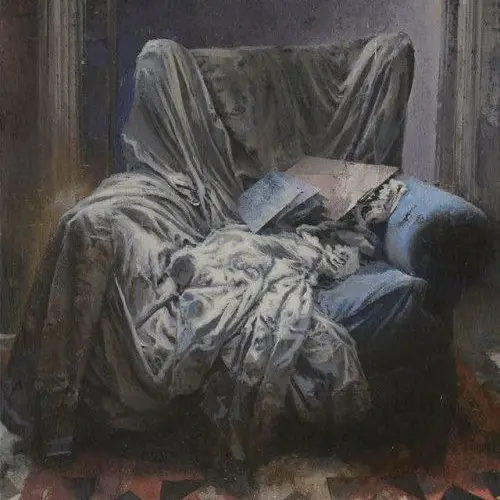

خستگی
قسمت ۱۲
بر روی صندلی، خودش را انداخت و به محض اینکه کمی به نشستن عادت کرد سرش را به عقب هل داد و آهی از درونش به بیرون پرتاب کرد. در آن هوای سرد، بخار سفیدی از دهانش بیرون میآمد. گویا داشت روح خودش را از بدن جدا میکرد. سعی داشت به آرامش برسد. اما ناگهان هانس از جان پرسید: «امروز به طرز عجیبی خسته بودی جان. چی شده؟» جان خودش رو جلو میکشد و میگوید: «من هر روز خستم. فقط امروز حوصلهی پنهون کردنش رو نداشتم.» بعد پیپ را از جیب داخلی ژاکتش بیرون میکشد و از جیب دیگر با کبریتی آن را روشن میکند. و پوک سنگینی به آن میزند. هانس تا به حال جان را آن گونه ندیده بود. از طرفی خوشحال بود که جان در حال استراحت است و لازم نیست بیشتر از این کار کند از طرفی نگران این قضیه بود که جان چند مورد دیگر را مانند یک جاسوس حرفهای از دید همگان مخفی نگه داشته بود. احساس میکرد با آدم کاملا متفاوتی در حال صحبت بود. آدمی که لبخندی به صورتش نداشت و تنها در حال پیپ کشیدن و دیدن تقلای شعلههای آتش بود. هانس نمیدانست چه کند برای همین از پذیرایی خارج شد و در حالی که به سوی آشپزخانه میرفت و برگشت و پرسید: «خب نوشیدنی میخوری؟» صدایی نشنید. تا به حال این سطح از خستگی را از جان ندیده بود. با همان پیپ در دستش خوابیده بود. شاید چند ساعت دیگر جان با یک گردن درد از خواب بیدار میشد اما هانس نمیخواست او را از چنین خوابی بیدار کند. به همین منوال چندین ساعت گذشت. هانس جان را به مقصود دیدن ایمی در همان حالت تنها گذاشته بود. ناگهان جان به واسطه سرمای هوای خانه از خواب بیدار شد. متوجه شد که هیزمها دیگر توانایی کار کردن ندارند. برای همین آنها را بازنشسته کرد و با نیروهای تازه نفسی جایگزین کرد. سپس بجای روشن کردن آنها شال و کلاهی بر تن کرد و از خانه خارج شد. در تموم مسیر با خود در حال حرف زدن بود. مشخص بود از تنها بودن خسته شده بود. در همین حین ناگهان چیز تیزی در پشت کمر خود حس کرد. فردی که پشت او بود حرفی نمیزد. جان هم ساکت و ثابت به زمین نگاه میکرد. میدانست آدم ریزنقشی پشت اوست. سایهای که بر روی زمین بود کوچکتر از آن بود که بخواهد برای آدم معمولی باشد. جان آرام گفت من چیزی همراهم نیست اما اگر میخوای میتونم پیپ و کبریتم رو به تو بدم. چاقو کمی به سمت جلو رانده شد که نشان دهد دزد دنبال پیپ او نیست. برای همین صدای بم گفت: «آروم با چشمهای بسته به سمت من برگرد.» جان از این در خواست متعجب بود. برای همین به آرامی با چشمهای بسته چرخید. نمیدانست به اندازه کافی چرخیده بود یا نه اما هیچ اعتراضی نشنید. دزد دوباره با صدای بم گفت: «حالا چشمات رو باز کن» جان منتظر بدترین چیز ممکن بود. میخواست به محض باز کردن چشم خودش را به عقب پرت کند تا اینکه چشمانش به چشمان شالی افتاد. شالی میخندید. در دستانش یک بسته داشت که تیزی گوشه جعبه باعث شده بود فکر کند این چاقو بود که به پشت او فشار میآورد. جان لحظهای در شوک بود اما زمانی که متوجه لبخند شالی شد. چشمانش رو به خیس شدن رفت. دستش را روی سر شالی گذاشت و موهایش را بهم زد و شالی هم در حالی که دو دستش به گرفتن جعبه مشغول بود سرش را از دست جان نجات داد و شالی گفت: «واقعا فکر کردی دزد پشتته؟» باز زد زیر خنده. جان از خندههای اون ریز میخندید اما سعی میکرد جدیت خود را حفظ کند و سپس جان پرسید: «ماجرای این جعبه سحر آمیز چیه؟». شالی در جواب سوال جان گفت: «خب اول از همه این رو از دستم بگیر خسته شدم از بس نگه داشتم.» سپس جان بسته را میگیرد و آن را باز میکند. متوجه لباس ارغوانی میشود که به شالی داده بود. شالی سیگارش را بیرون میآورد و قبل از اینکه کبریت را بیرون بکشد. جان سیگار رو از دهنش بیرون میکشد و میگوید: «معلومه داری چی کار میکنی؟» شالی با تعجب گفت: «مشخص نیست میخوام یه نخ سیگار بکشم؟ سردمه به چیزی نیاز دارم که گرمم کنه.» سپس دستش را به سمت جان دراز کرد که سیگارش را پس بگیرد. سپس جان سیگار را در دستش له میکند و ژاکتش را در میآورد و به شالی میدهد که تنش کند و میگوید: «برای اینکه سردت نشه باید لباس بپوشی نه اینکه سیگار بشی. حالا بگو ماجرا این لباس چیه؟» شالی چشم غرهای به جان میرود و در حالی که ژاکت را از دست جان میقاپد میگوید: «هیچ همون لباسیه که اون شب بهم دادی. شستمش و برات میخواستم پس بیارم که یهو تو خیابون دیدمت.» جان جعبه رو به سمت شالی گرفت و گفت: «خب این لباس به چه درد من میخوره؟ به تن من که نمیخوره. برای خودت نگهش دار». شالی به جان اشاره میکند کمی به سمت پایین خم شود که چیزی در گوشش بگوید و وقتی اطرافش را دید به آرامی در گوش جان چیزی گفت و با لبخندی از او دور شد و جان در همان حالت در حالی صورتش سرخ شده بود ماند.